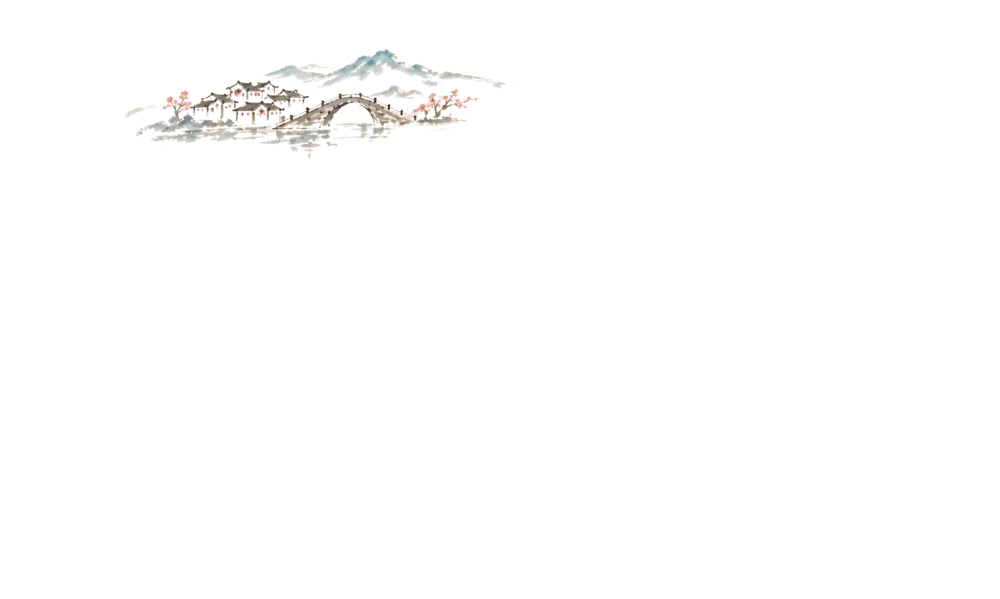

CATALOGUE · 四类辑录
非遗辑录
一器一艺，一腔一调，一节一味。
循着四色，走进流传至今的日常。
四门各有色，百艺自成章。

卷首语
一器一艺，
一腔一调。
把匠人、戏台、节令和风味铺在一幅画里，山脚的每一组剪影，都是一个入口。
色取 · 传统色意象
图像与出处
页面采用纯色背景，人物、村落素材由团队生图提供；交互为页面内热区链接。其余出处记录见 docs/sources.md 与 site/assets/images/heritage/README.md。